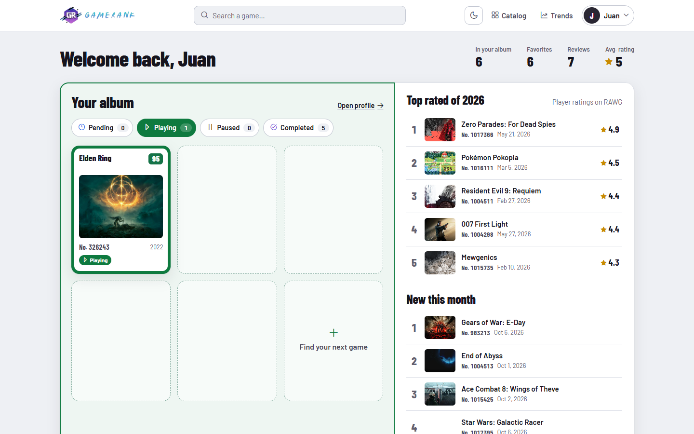
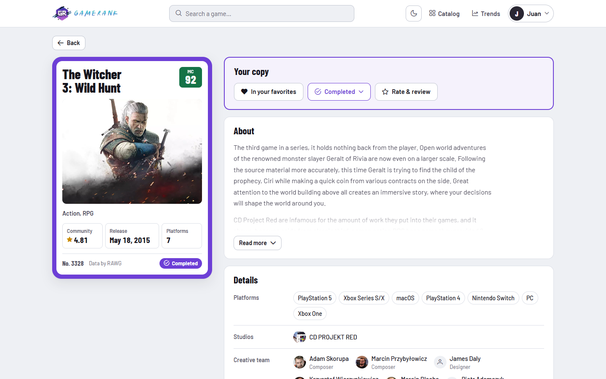
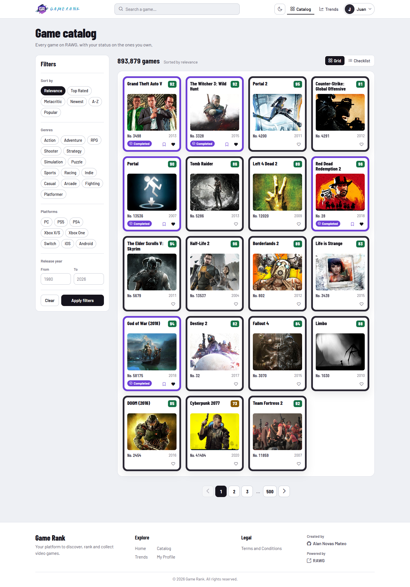
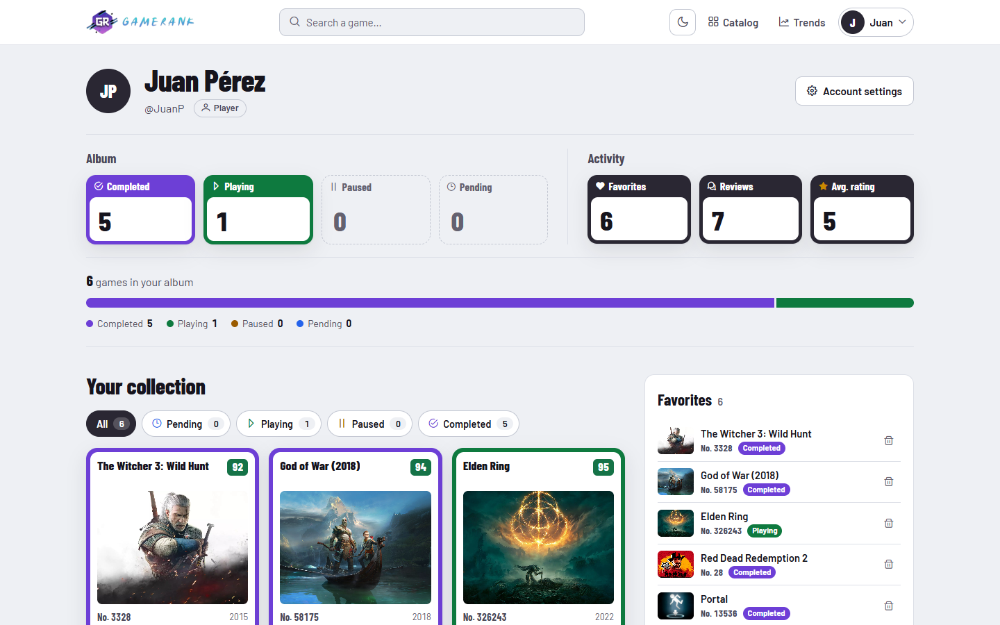
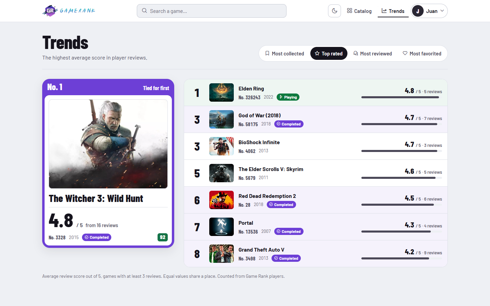
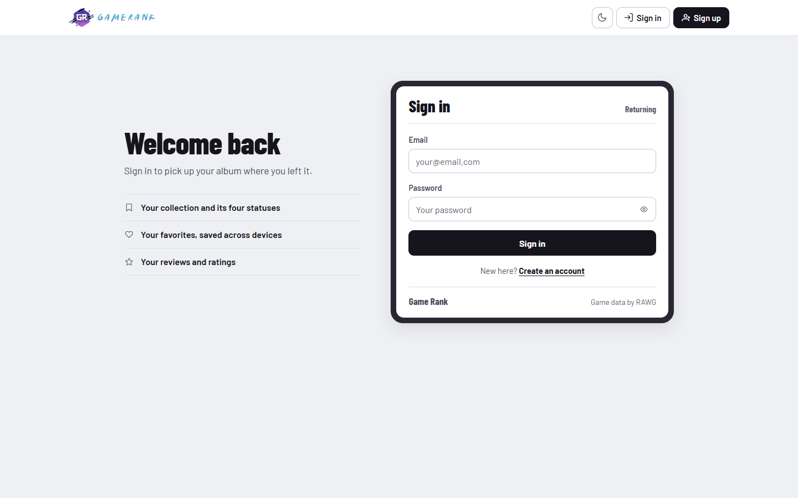
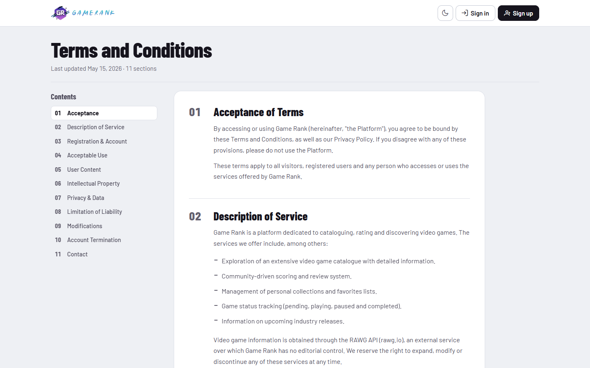
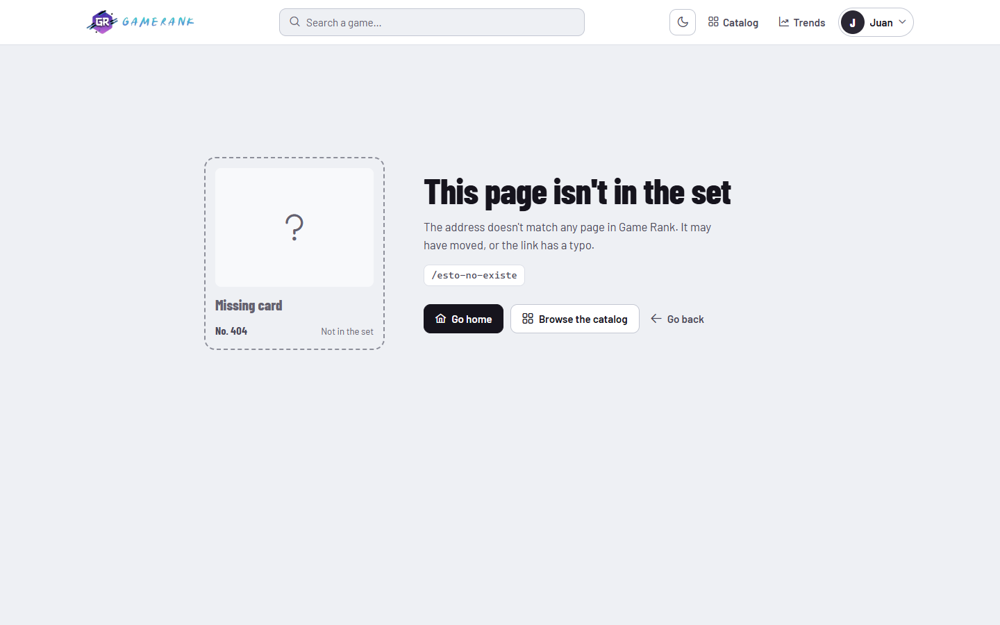

Cada juego es una carta: RAWG imprime los datos y el estado y la nota del jugador la hacen suya. Un sistema de tokens, una tipografía y un conjunto de componentes para todas las vistas, en tema claro y oscuro.
10 vistasTokens --gd-*Barlow · Barlow CondensedPrimeIconsWCAG 2.1 AA
The Witcher 3: Wild Hunt92
Community★ 4.81
Release2015
Platforms7
No. 3328 · Data by RAWGCompleted
Game Rank · Guía de estilosFuente: DESIGN.md y frontend/src/styles/card-world.css · octubre 2026
01Principio
La carta coleccionable
El marco sólido de una carta rodea una cara blanca. Ese marco es el único campo grande de color y significa propiedad: neutro si el juego no es tuyo, en el tono de su estado si lo es. Los datos se imprimen en condensada, los números en cifras tabulares y solo las cartas flotan.
One FrameEn una carta, el marco es el único campo grande de color.
Frame Means OwnershipEl tono de estado solo aparece si el jugador tiene el juego con ese estado.
Owned RowEn listas mixtas, la fila propia lleva un tinte del 7 % de su estado.
Ink BarsLas barras de datos son de tinta, nunca de un tono de estado.
Condensed Prints FactsNombres, títulos y cifras en Barlow Condensed; la interfaz en Barlow.
Tabular NumbersToda cifra comparable usa cifras tabulares.
Only Cards FloatPaneles, tablas y bandas son planos con regla fina; solo las cartas tienen relieve.
Overlay LiftMenús, toasts, modales y el panel lateral comparten el relieve de la carta.
Empty SlotLo vacío es una ranura discontinua, sin marco, sin tono y sin relieve.
Sentence caseEtiquetas y botones en minúscula de frase; nada en mayúsculas espaciadas.
01 · PrincipioReglas con nombre en DESIGN.md
02Marca
Logo «Card G»
El propio marco de la carta dibuja la G: la abertura arriba a la derecha y el travesaño entra hacia la cara. Una sola tinta, sin tonos de estado. Wordmark «GAME RANK» en Barlow Condensed 800 convertido a trazos, tracking 0.02em.
ColorcurrentColor en tinta: #16141D en claro, #F1F0F6 en oscuro. Versiones blancas solo sobre fondos oscuros sin tokens.
HeaderLockup de 40px (38px en ≤ 480px); el wordmark se oculta en ≤ 599px y entre 641 y 840px.
MínimosLockup 24px de alto; símbolo 16px con el corte pequeño (trazos 44/42), también en el favicon.
Zona de respetoEl grosor del marco vertical (36/256 del alto) a cada lado.
Archivosfrontend/src/assets/brand/ y el juego de favicons en frontend/public/.
02 · MarcaAccesible: aria-label «Game Rank home» en el enlace del logo
03Arquitectura visual
Una composición por vista, un mismo mundo

HomeÁlbum abierto y checklists

DetalleCarta principal y «Your copy»

CatálogoFiltros, rejilla o checklist

PerfilVitrina de trofeos

TendenciasTabla de clasificación

AccesoCarta de socio

TérminosReglamento con índice

404La carta que falta
Administración (Users y Comments) usa el formato «libro de registro»: sin cartas ni tonos de estado. Se omite aquí porque sus tablas muestran datos personales de usuarios; capturas en .impeccable/review/admin/.
03 · Arquitectura visualCapturas reales de .impeccable/review/
04Sistema de temas
Superficie: claro y oscuro
Fondo de cartulina fría, caras blancas, tinta casi negra en tres pasos y dos grises de regla. El tema oscuro reasigna cada token; nunca se escribe un color fuera de ellos.
Tema claro · :root
ground#EEF0F4
face#FFFFFF
ink#16141D
ink-2#4B4858
ink-3#64616F
rule#DCDFE7
rule-strong#C3C7D2
frame#2A2733
Tema oscuro · [data-theme="dark"]
ground#0E0F15
face#181922
ink#F1F0F6
ink-2#BCB9CA
ink-3#A09DB0
rule#2A2B38
rule-strong#3B3C4C
frame#4A4757
04 · Sistema de temasTokens --gd-* en frontend/src/styles/card-world.css
05Paleta de estado
El color significa propiedad
Los cuatro estados de colección son los únicos tonos que pueden llenar un marco. Se usan solo cuando el jugador tiene el juego en ese estado; en oscuro se aclaran y el texto sobre el marco pasa al fondo oscuro.
Pending#2563EB · oscuro #7AA2FF
Playing#0E7A3F · oscuro #3DD68C
Paused#9A5B00 · oscuro #F2B544
Completed#6D3FD6 · oscuro #B096FF
Portal
No. 135362007
Cyberpunk 2077
Pending
Elden Ring
Playing
Skyrim
Paused
God of War
Completed
05 · Paleta de estadoClases cw-frame y cw-frame--pendiente|jugando|pausado|completado
06Acentos
Los únicos colores pequeños
Fuera del marco, el color solo aparece en piezas pequeñas: el sello de Metacritic, las estrellas, la rareza de los logros y el peligro. Nunca ocupan una superficie grande.
Sello de Metacritic
926841—
≥ 80 #157347 · ≥ 50 #8C5A00 · menos #B3261E · sin nota: sello vacío o se omite.
Estrella y rareza
★ 4.8
star #C98A00 (oscuro #F2B544) · rare #B45309 · uncommon #2563EB · common #8A8796.
Peligro
Delete account
danger #B3261E (oscuro #F07A72): solo acciones destructivas y errores de validación.
Nombres de juego, títulos, cifras, sellos y números de set; cifras tabulares en datos comparables.
Barlow · 400 / 500 / 600 / 700
Aa 0123
Texto, etiquetas, botones y controles, en minúscula de frase. Ambas con @fontsource en main.js.
Rol
Familia
Tamaño
Peso
Uso
Título de página
Condensed
2.75–3.4rem
800
h1 de cada vista
Sección
Condensed
2rem
800
.cw-h2
Dato
Condensed
1.2rem
700
celdas de estadística, «No. {id}»
Cuerpo / prosa
Barlow
1rem · 1.5 / 1.65
400
texto y lectura larga
Etiqueta / botón
Barlow
0.875 / 0.95rem
600
labels, botones, chips
07 · TipografíaSora queda retirada del proyecto
08Iconografía
Una librería: PrimeIcons
Iconos de trazo de PrimeIcons, siempre con aria-hidden="true" y con el nombre en el texto o en un aria-label. Cada estado tiene su icono fijo; el marcapáginas representa la colección en todas las vistas.
08 · Iconografíautils/statusMeta.js fija etiqueta e icono por estado
09Componente · Carta
Anatomía de la carta
Elden Ring95
Community★ 4.8
Release2022
Platforms4
No. 326243 · Data by RAWGPlaying
Marco22px de radio, 10px de canto, color neutro o del estado. Relieve de carta.
CaraBlanca, 14px de radio. Banda de nombre en Condensed 800 con el sello de Metacritic.
Arte4:3, 10px de radio, regla interior de 1px.
CeldasDatos con regla fina y 8px de radio; cifras tabulares.
Pie de set«No. {id}» como número de set, crédito «Data by RAWG» y el sello del estado.
Mini cartaMiniCard.vue: 16 / 11 / 7px, pie de set de dos líneas, sello solo icono en ≤ 480px.
VariantesCarta campeona (Tendencias), carta de socio (Acceso), placa de trofeo (Perfil).
09 · CartaGameDetail y components/CardWorld/MiniCard.vue
10Componente · Listas
Checklists y clasificaciones
Las listas son páginas planas con reglas finas. El puesto en Condensed, el número de set, el sello del estado si el juego es tuyo y la barra del dato en tinta.
1
Elden Ring
No. 3262432022Playing
4.8 / 5 · 5 reviews
3
BioShock Infinite
No. 40622013
4.7 / 5 · 3 reviews
3
God of War (2018)
No. 581752018Completed
4.7 / 5 · 7 reviews
Empates: los valores iguales comparten puesto y el siguiente salta (1, 3, 3, 5). Fila propia: tinte del 7 % de su estado; al pasar, 13 %.
10 · ListasOwned Row Rule · Ink Bars Rule
11Componente · Controles
Botones, pestañas y selectores
Botones · 42px · 10px de radio
Save changesAccount settingsGo back
Primario en tinta (hover ink-2), fantasma en cara con regla fuerte, discreto sin borde. Pulsado: escala 0.97 en 160ms.
Control segmentado · 10 / 3 / 32 / 7px
UsersCommentsGridChecklist
Para cambiar de vista o de tabla. Selección en tinta; aria-current o aria-pressed según el caso.
Pestañas de estado · pill · flechas, Inicio y Fin
All 6Pending 0Playing 1Paused 0Completed 5
En reposo el icono lleva el tono; seleccionada, la pestaña se llena del marco. Roving tabindex y aria-selected.
11 · ControlesFoco visible: anillo de 2px en azul Pending con 2px de separación
12Componente · Formularios
Campos y validación
your@email.com
Reposo: regla fuerte, marcador ink-3.
@pixel_hunter
Foco: borde de tinta y anillo del sistema.
••••
Use at least 8 characters.
Altura42px (40px en los años del filtro), 10px de radio, relleno 0 12px.
ValidaciónAl enviar se nombra cada error en su campo y el foco va al primero; nunca un botón deshabilitado sin motivo.
Accesibilidadaria-invalid y aria-describedby siempre apuntan a una pista existente.
Create accountNew member
@pixel_hunter
@pixel_hunterMember since 2026
12 · FormulariosCarta de socio: LoginRegister/style_auth.css
13Componente · Capas
Modales, menús, toasts y panel
Remove from favorites?
Portal will leave your favorites. You can add it again from the catalog.
CancelRemove
Favorite added
Game added to your favorites.
Pending
Playing
Paused
Completed
Modal18px de radio, regla fina, relieve de capa, velo rgba(14,15,21,.55) sin desenfoque.
ToastChip de tinta; solo los errores usan el tono de peligro.
Menú de estadorole="menu", opciones menuitemradio; la activa se llena de su estado.
Panel lateralAjustes de cuenta: entra por la derecha en 260ms; editar y contraseña son pasos dentro del panel.
13 · CapasOverlay Lift Rule
14Tokens de forma
Radios anidados y relieve
22 → 14 → 10 → 8px: cada radio, menor que su contenedor.
221816141086999
card 22
carta principal, campeona, socio
album 18
álbum, páginas, modales
mini 16
mini carta, ranuras
panel 14
paneles, tablas, vacíos
control 10
botones, campos
cell 8 · seal 6
celdas, sello Metacritic
Relieve --gd-raise: 0 1px 2px / 0 10px 28px en tinta al 6 % y 10 %; solo cartas y capas. Espaciado: 6 · 10 · 16 · 28 · 72px; márgenes 24px (14px en móvil).
14 · Tokens de formaOnly Cards Float Rule
15Movimiento y accesibilidad
Movimiento con propósito, AA en ambos temas
Curva
Valor
Uso
--ease-out
cubic-bezier(.23,1,.32,1)
recolor de marco 320ms, menús 160ms, elevación 200ms
--ease-in-out
cubic-bezier(.77,0,.175,1)
barrido holográfico 900ms
--ease-drawer
cubic-bezier(.32,.72,0,1)
panel de cuenta 260ms
FirmaUn único movimiento de firma: el barrido holográfico al cambiar el estado de una carta.
Reduced motionSe elimina el barrido, el crecimiento de barras y las elevaciones; solo quedan opacidad y color.
ContrasteWCAG 2.1 AA en claro y oscuro; el texto sobre el marco neutro oscuro llega a 7.95:1.
TecladoFoco visible, skip link al contenido, pestañas con flechas, Escape cierra capas y devuelve el foco.
IdiomaInterfaz en inglés en todas las vistas y etiquetas ARIA.
15 · Movimiento y accesibilidadCurvas en frontend/src/style.css
FINGame Rank
Un mundo, dos temas, diez vistas.
Los mismos tokens, la misma carta y las mismas reglas mantienen Game Rank coherente de extremo a extremo. Cuando el código y esta guía difieren, se corrige la guía desde DESIGN.md.